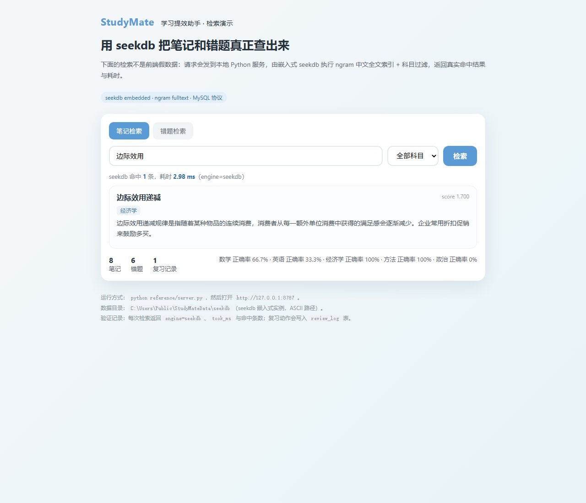
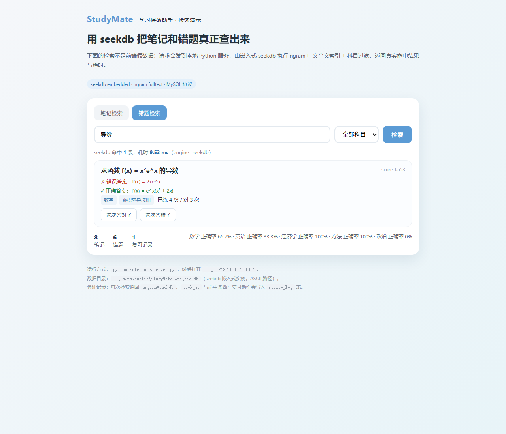

StudyMate 面向大学生和考研人群，把「学习计划、笔记摘要、错题回顾」三件高频事项做成一个轻量工具：计划拆到每天、笔记自动提炼重点、错题按间隔重复安排复习。项目用 Qoder 开发，后端以 seekdb 存储笔记与错题并提供中文全文检索，网站通过 Qoder Sites 发布。
学习任务太多，难以合理安排时间，经常拖延到最后一刻
课堂笔记课后看不完，重点不突出，复习效率低
同样的错误一犯再犯，没有系统的错题管理机制
不知道离考研/考试还有多少差距，缺乏清晰的学习路径
智能制定并跟踪学习计划
今日进度：45% (已完成 2/4 项任务)
示例笔记已存入 seekdb，可按关键词做中文全文检索；下方摘要展示整理后的要点结构
边际效用递减规律是指随着某种物品的连续消费，消费者从每一额外单位的消费中获得的满足感会逐渐减少。这个规律适用于大多数商品和服务。举例来说，当你非常饿的时候，第一个汉堡带给你的满足感是最强的，第二个就没那么强了，吃到第五个可能已经不想吃了。这个规律对定价策略、需求预测都有重要意义。企业通常会提供折扣促销来鼓励消费者购买更多，因为边际效用递减意味着需要更低的价格才能让消费者对额外单位产生兴趣。
科学间隔重复，强化薄弱知识点
学习笔记、错题和复习记录没有写死在 HTML 里。本地服务用嵌入式 seekdb
（MySQL 协议）保存三张表，检索走 ngram 中文全文索引并支持科目结构化过滤，
点击「这次答对了」会把复习动作写回 review_log。
本页下方每一组数字都取自 2026-10-29 的实际运行输出。
notes：title / content / subject / tags，FULLTEXT ft_notes(content) WITH PARSER ngramquestions：subject / question / wrong_answer / correct_answer / knowledge_point / attempts / correct_count，FULLTEXT ft_questions(question) WITH PARSER ngramreview_log：question_id / correct / reviewed_atORGANIZATION = HEAP，首次启动自动建表并写入 8 条笔记、6 道错题GET /api/health健康检查，返回 {"ok":true,"engine":"seekdb"}GET /api/search?q=&subject=笔记全文检索 + 科目过滤GET /api/questions?q=&subject=错题全文检索 + 科目过滤POST /api/review写入复习记录，并累加 attempts / correct_countGET /api/stats笔记、错题、复习条数与分科目正确率操作系统Windows 11
Python3.12.14
数据库驱动pylibseekdb 1.4.0.post2（嵌入式，无需 Docker）
客户端pymysql 1.2.3
服务端口127.0.0.1:8787
数据目录C:\Users\Public\StudyMateData\seekdb
# 在 qoder/ 目录下执行
python -m pip install -r requirements.txt
# 1. 一键验收（6 项检查，无需启动服务）
python run_demo.py
# PASS：seekdb 检索 / 过滤 / 复习写回 / 统计全部可用
# 2. 启动本地演示服务
python backend/server.py
# [server] http://127.0.0.1:8787
# 3. 接口级验收（7 项断言，另开终端）
python backend/verify_seekdb.py两个硬约束：seekdb 数据目录必须是纯 ASCII 路径，
放在含中文的用户目录下会 seekdb_open failed: code=-1；
中文全文索引必须 WITH PARSER ngram，改回默认分词器后中文短语不再命中。
① 中文全文检索命中，返回真实 score 与耗时
GET /api/search?q=边际效用
count 1 · took_ms 5.95 · score 1.6996 · engine=seekdb；命中笔记《边际效用递减》（经济学）
② 换一个词，命中另一条数据
GET /api/questions?q=导数
count 1 · took_ms 3.28 · score 1.5535； 命中「求函数 f(x) = x²e^x 的导数」，已练 4 次 / 对 3 次
③ 科目过滤下推到 seekdb 执行
q=导数&subject=数学 → count 1
q=导数&subject=英语 → count 0
同一关键词换科目即无结果，说明 subject 条件由数据库执行，
不是前端数组筛选
④ 复习动作写回数据库
POST /api/review {"question_id":1,"correct":true}
attempts 4 → 5、correct_count 3 → 4；
/api/stats 的 reviews 1 → 2。
在演示页点一次「这次答对了」后，页面提示已写入 seekdb：第 6 次练习，
reviews 2 → 3，数学正确率 71.4% → 75%
验收脚本 backend/verify_seekdb.py 本次运行输出 7 项全部 PASS：
engine 声明、两次检索的 score/took_ms、科目过滤、复习写回、review_log +1、分科目正确率变化。


线上站点是纯静态页面：它不会向 127.0.0.1 或任何本机端口发起请求。
上面截图与数据来自开发者本机的 seekdb 演示服务，评审需要复现时请按「运行说明」在本地启动。
随时随地查看学习计划，利用碎片时间背单词、刷错题
大屏操作更舒适，适合深度学习和规划管理
无需下载，打开即用，轻量级学习工具